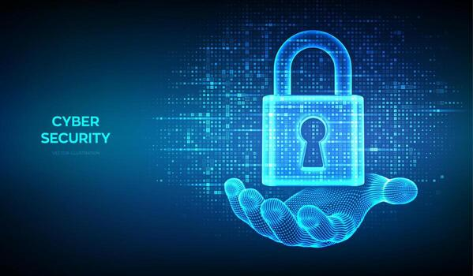

Malware is harmful software that can damage computers
or steal information. Hackers are people who try to
get into computer systems. Some hackers help find
security problems, while others break into systems
without permission. Malware and hackers can cause
problems for businesses and people.
Malware and Cyber Threats
The WannaCry Ransomware Attack
On ,
a malware attack called WannaCry
spread to computers around the world.
It locked people's files and demanded money
to unlock them.
The attack affected hospitals, businesses,
and other organizations.
This event showed why keeping computers
updated is important for cybersecurity.
Types of Malware
Here are three common types of malware:
Viruses: Harmful programs that can spread
to other files and damage computers.
Ransomware: Malware that locks your files
and demands money to unlock them.
Spyware: Software that secretly collects
information from your computer.
Common Hacker Motives
Stealing money or personal information.
Breaking into computer systems.
Ways to Stay Safe Online
Use strong passwords.
Do not click on suspicious links.
Keep your computer updated.

What Is a Network Packet?
A network packet is a small piece of data
sent from one computer to another.
Packets help information travel across
the internet. Hackers may try to steal
information from packets that are not
protected.
There are simple ways to protect yourself from
hackers and malware. People should use strong
passwords and avoid clicking on strange links.
It is also important to keep computers and
phones updated. These steps can help keep
personal information safe.
Ways to Protect Yourself
Use strong passwords.
Do not click on suspicious links.
Keep your devices updated.
Turn on two-factor authentication.
Learn More About Cybersecurity
Want to learn more about staying safe online?
Visit the website below for helpful tips.